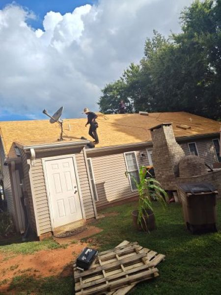

Professional Roofing Solutions You Can Rely On
NuWay Roofing provides reliable, high-quality roofing services designed to protect your home and investment. Whether you need a minor repair or a full roof replacement, our experienced team delivers durable workmanship and clear communication from start to finish.
Get Your Estimate Now
Why Choose NuWay Roofing?
Experienced professionals focused on quality workmanship
Our team brings years of hands‑on experience to every project. Skilled roofers, certified installers, and trained supervisors ensure work is done right the first time, with attention to detail that extends the life and performance of your roof.
Clear communication from inspection to completion
You’ll know what to expect at every step. We provide thorough, easy-to-understand inspections, transparent written estimates, and regular progress updates so there are no surprises from start to finish.
Reliable materials and proven installation methods
We use industry‑trusted materials and installation techniques backed by manufacturer warranties and best-practice standards. That combination delivers durable results and maximizes the long‑term value of your investment.
Respect for your home and property
We treat your property as if it were our own. Protecting landscaping, minimizing dust and debris, and cleaning up thoroughly after each day of work. Our crews maintain professional behavior and a tidy jobsite throughout the project.
Local service you can trust
As a local company, we understand regional weather, code requirements, and material performance. We’re committed to serving our neighbors with dependable service, prompt follow-up, and continued support long after the job is done.
Our Process
5 Steps from Broken to Built
From your first call to final walkthrough, we handle everything so you don't have to.
Free Inspection and Consultation
We assess roofing, flashing, and window conditions, identify leaks, drafts, and areas of concern, and recommend solutions.
Written Estimate
Detailed scope, materials, timeline, and warranty information.
Scheduling and Removal
Professional removal of old roofing materials and windows, proper disposal, and site protection.
Installation
Certified installers follow best practices for water management, flashing, insulation, and air-sealing.
Final Walkthrough and Warranty
We review installations with you and provide warranties and maintenance guidance.